청소년상담사-3급(2교시) (2016-10-01 기출문제)
1과목: 학습이론
1. 성취목표지향성에 관한 설명으로 옳은 것은?
- 수행목표지향 학생은 숙달목표지향 학생보다 자신의 학습과 이해 향상에 초점을 둔다.
- 수행목표지향 학생이 숙달목표지향 학생보다 시험에서 덜 불안해 한다.
- 숙달목표지향 학생은 다른 학생과 비교해서 자신의 능력이 어느 정도인지에 초점을 둔다.
- 숙달목표와 수행목표는 상호배타적인 관계이기 때문에 하나가 높으면 다른 하나가 낮은 특성이 있다.
- 어려움에 직면할 때 숙달목표지향 학생은 수행목표지향 학생보다 더 끈기 있게 학습한다.
(정답률: 74%)

2. 와이너(B. Weiner)의 귀인이론에 관한 설명으로 옳은 것을 모두 고른 것은?
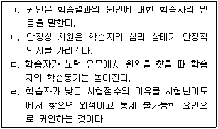
- ㄱ, ㄴ
- ㄱ, ㄹ
- ㄴ, ㄷ
- ㄱ, ㄷ, ㄹ
- ㄴ, ㄷ, ㄹ
(정답률: 68%)
3. 정서와 학습동기에 관한 설명으로 옳지 않은 것은?
- 교수자는 학생의 상황적 흥미보다 개인적 흥미를 더 잘 변화시킬 수 있다.
- 학생의 삶과 연결하여 설명하면 학생의 흥미와 동기가 증진된다.
- 학습자 흥미를 유발하도록 환경을 만들어 주면 학습동기가 높아진다.
- 정서는 학습결과를 어떻게 귀인하는가에 따라 달라진다.
- 학생들이 느끼는 정서는 이들의 학습동기와 연관이 있다.
(정답률: 84%)
4. 자기효능감에 관한 설명으로 옳지 않은 것은?
- 자기 자신에 대한 정서적 반응 또는 가치평가이다.
- 비슷한 과제에 대한 과거 성공경험이 중요한 요인이다.
- 자기효능감이 높은 학생이 낮은 학생에 비해 더 빨리 효과적인 전략으로 수정한다.
- 교사의 격려가 학생의 자기효능감을 증진시킨다.
- 동일시 모델을 관찰하는 것은 자기효능감에 영향을 미친다.
(정답률: 63%)
5. 학습심리학자가 설명한 주요 개념의 내용으로 옳지 않은 것은?
- 분트(W. Wundt)는 사고의 기본 구성요소를 밝히고자 내성법(introspection)을 사용하였다.
- 베르트하이머(M. Wertheimer)는 요소 간 연합을 설명하는 회피학습을 연구하였다.
- 쏜다이크(E. Thorndike)는 유기체가 행동 후 만족스런 상태를 경험하면 그 행동이 강화된다는 효과의 법칙을 제안하였다.
- 에빙하우스(H. Ebbinghaus)는 학습이 연합 경험의 횟수로 결정된다는 가정 하에 망각곡선을 연구하였다.
- 제임스(W. James)는 인간의 의식과정이 총체로서 환경적응에 관여한다는 기능주의적 입장을 취했다.
(정답률: 49%)
6. 통찰학습에 관한 설명으로 옳은 것을 모두 고른 것은?
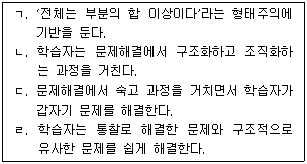
- ㄱ, ㄴ
- ㄱ, ㄷ
- ㄱ, ㄴ, ㄹ
- ㄴ, ㄷ, ㄹ
- ㄱ, ㄴ, ㄷ, ㄹ
(정답률: 38%)
7. 가네(R. Gagné)의 학습이론에 관한 설명으로 옳지 않은 것은?
- 학습의 인지과정으로 학습을 위한 준비, 획득과 수행, 학습의 전이 과정을 제안한다.
- 하나의 학습이론에서 제시하는 학습의 본질을 모든 학습에 적용할 수는 없다고 가정한다.
- 학습의 결과 영역을 지적 기능과 운동 기능의 2가지로 구분한다.
- 하위요소를 먼저 학습하지 않고는 상위요소를 학습할 수 없다는 학습위계를 제안한다.
- 새로운 기능을 습득하기 위한 내적 조건과 내적 과정을 지원하는 환경적 자극을 강조한다.
(정답률: 46%)
8. 구성주의 학습이론에 관한 설명으로 옳지 않은 것은?
- 학습에 대한 상대주의적 접근을 강조한다.
- 학습자와 환경 간의 상호작용으로 지식이 형성된다.
- 외부에서 제공되는 정보에 집중하고 기존 정보와 연결하여 그대로 저장한다.
- 개인의 내적 이해에 초점을 맞추어 학습에서 개인차를 인정한다.
- 학습자가 정보를 내면화하는 과정에서 지식을 능동적으로 재조직한다.
(정답률: 57%)
9. 반복적으로 제시되는 자극에 대하여 정향 반응이 감소하는 현상은?
- 변별
- 소거
- 민감화
- 습관화
- 자극일반화
(정답률: 65%)
10. 고전적 조건형성의 원리를 적용한 연구사례가 아닌 것은?
- 밀러(N. Miller)는 바이오피드백을 이용하여 자율적 내장 반응을 조건화하였다.
- 파블로프(I. Pavlov)는 음식물과 결합하여 종소리에 대한 개의 소화액 분비를 유발하였다.
- 월페(J. Wolpe)는 체계적 둔감화 절차를 이용하여 공포증 환자의 불안 증상을 해소하였다.
- 왓슨(J. Watson)은 망치소리를 이용하여 흰쥐에 대한 어린 아동의 조건공포 반응을 형성하였다.
- 로스바움(B. Rothbaum)은 가상현실노출치료(VRET)를 사용하여 환자의 고소 공포증을 치료하였다.
(정답률: 55%)
11. ( )에 들어갈 용어로 옳은 것은?
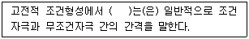
- 차폐
- 근접성
- 수반성
- 자발적 회복
- 잠재적 억제
(정답률: 60%)
12. 조작적 조건형성의 원리에 관한 설명으로 옳지 않은 것은?
- 조건형성에서 근접성이 수반성보다 더 강력한 효과성 변인이다.
- 정적 강화는 어떤 반응 후에 바람직한 자극이 제시될 때 그 반응이 증가하는 현상이다.
- 부적 강화는 어떤 반응 후에 혐오스런 자극이 제거될 때 그 반응이 증가하는 현상이다.
- 제 1유형의 처벌은 어떤 반응 후에 혐오스런 자극이 제시될 때 그 반응이 감소하는 현상이다.
- 조건형성에서 연속강화보다 부분강화를 적용할 때 소거에 대한 저항이 더 오래 지속된다.
(정답률: 47%)
13. 다음의 밑줄 친 부분에서 적용된 강화계획은?
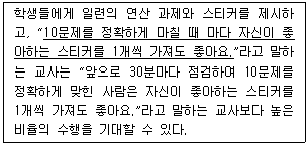
- 연속강화
- 고정간격강화
- 고정비율강화
- 변동간격강화
- 변동비율강화
(정답률: 60%)
14. 다음 사례에서 적용된 조작적 조건형성 방법은?
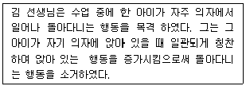
- 처벌
- 상표제도
- 차별강화
- 행동연쇄
- 행동조성
(정답률: 68%)
15. 부분강화 효과에 관한 좌절 가설의 설명으로 옳은 것을 모두 고른 것은?
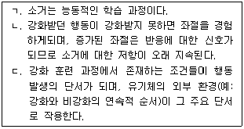
- ㄱ
- ㄱ, ㄴ
- ㄱ, ㄷ
- ㄴ, ㄷ
- ㄱ, ㄴ, ㄷ
(정답률: 24%)
16. 정적 강화가 일어날 때 뇌의 보상중추에서 주로 분비되는 신경전달물질은?
- 도파민
- GABA
- 세로토닌
- 글루타메이트
- 노르에피네프린
(정답률: 79%)
17. 비정서적 사건에 비해서 정서적 사건의 기억에 더 밀접하게 관여하는 뇌 부위는?
- 해마
- 대상회
- 측두엽
- 편도체
- 전전두엽
(정답률: 65%)
18. 정보처리이론을 활용하여 기억을 설명한 것으로 옳지 않은 것은?
- 컴퓨터를 모델로 삼고 설명한다.
- 기억의 주요 과정은 부호화, 저장, 인출이다.
- 감각기억, 단기기억, 장기기억의 방향으로 정보가 부호화 된다.
- 장기기억의 지식은 인출되어 감각기억에서부터 새로운 정보와 연결된다.
- 단기기억 단계에서 새롭게 학습해야 하는 정보는 유지시연보다 정교화 시연을 할 때 더 효과적이다.
(정답률: 59%)
19. 고전적 조건형성에서 레스콜라-와그너(Rescorla-Wagner) 모형으로 설명할 수 있는 현상을 모두 고른 것은?
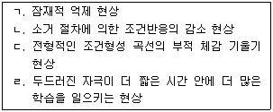
- ㄱ, ㄴ
- ㄱ, ㄷ
- ㄴ, ㄹ
- ㄱ, ㄷ, ㄹ
- ㄴ, ㄷ, ㄹ
(정답률: 30%)
20. 사회인지학습의 유형이 아닌 것은?
- 역전학습(flipped learning)
- 관찰학습(observational learning)
- 모방학습(modeling)
- 사회학습(social learning)
- 대리학습(vicarious learning)
(정답률: 72%)
21. 반두라(A. Bandura)의 사회인지학습이론에 관한 설명으로 옳지 않은 것은?
- 학습과 수행을 구별한다.
- 강화는 학습이 일어나기 위한 필수요건이다.
- 인간은 대리적 강화를 통해서 학습할 수 있다.
- 상호작용적 결정론(reciprocal determinism)을 전제한다.
- 다른 사람의 행동관찰을 통해서 새로운 행동을 학습할 수 있다.
(정답률: 72%)
22. 다음 내용이 설명하는 것은?
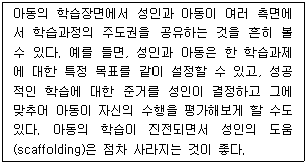
- 발견학습(discovery learning)
- 협력학습(cooperative learning)
- 공동조절학습(co-regulated learning)
- 자기조절학습(self-regulated learning)
- 타인조절학습(other-regulated learning)
(정답률: 67%)
23. 톨만(E. Tolman)의 학습이론과 관련이 없는 것은?
- 인지도
- 장소학습
- 잠재학습
- 반응학습
- 방사형 미로학습
(정답률: 35%)
24. 처리수준(levels of processing) 이론에 관한 설명으로 옳지 않은 것은?
- 이중저장모델에 대한 이론적 대안이다.
- 학습의도 자체보다는 처리의 깊이가 중요하다.
- 심층처리가 되면 우연학습도 의도학습만큼이나 효과적이다.
- 구조처리를 하는 조건이 어의처리를 하는 조건보다 재생률이 높다.
- 주어진 학습재료가 어떻게 부호화되느냐에 따라 기억의 지속성이 결정된다.
(정답률: 41%)
25. 단기기억의 특징이 아닌 것은?
- 용량이 제한되어 있다.
- 절차기억이 저장되어 있다.
- 정보를 유지하는 시간이 제한되어 있다.
- 망각의 일차적 원인은 간섭(interference)이다.
- 음향부호(acoustic code)가 어문적 정보 유지에 이용된다.
(정답률: 49%)
2과목: 청소년 이해론
26. 브론펜브레너(U. Bronfenbrenner)의 생태학적 체계 중 가정과 학교, 또래집단 사이의 상호작용으로 이루어지는 체계는?
- 미시체계
- 중간체계
- 외체계
- 거시체계
- 시간체계
(정답률: 58%)
27. 청소년비행이론에 관한 설명으로 옳은 것을 모두 고른 것은?
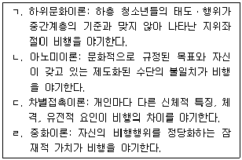
- ㄱ, ㄴ
- ㄱ, ㄷ
- ㄴ, ㄹ
- ㄱ, ㄴ, ㄹ
- ㄴ, ㄷ, ㄹ
(정답률: 41%)
28. 스턴버그(R. Sternberg)의 사랑의 이론에 관한 설명으로 옳지 않은 것은?
- 친밀감, 열정, 책임(commitment)은 사랑의 3요소이다
- 친밀감은 사랑의 정서적 측면을 반영한다.
- 열정은 사랑의 동기적 측면을 이루는 구성요소이다.
- 책임은 사랑의 인지적 측면을 나타낸다.
- 사랑의 유형은 9가지이다.
(정답률: 58%)
29. 엘킨드(D. Elkind)의 청소년기 '자기중심성(egocentrism)'에 관한 설명으로 옳은 것을 모두 고른 것은?
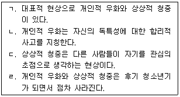
- ㄱ, ㄴ
- ㄱ, ㄷ
- ㄱ, ㄹ
- ㄱ, ㄷ, ㄹ
- ㄱ, ㄴ, ㄷ, ㄹ
(정답률: 38%)
30. 여자청소년의 성적(性的) 발달을 유발하는 대표적인 여성 호르몬은?
- 안드로겐
- 에스트로겐
- 스테로이드
- 테스토스테론
- 프로스타글란딘
(정답률: 69%)
31. 피아제(J. Piaget)의 형식적 조작기에 나타나는 사고의 특징으로 옳지 않은 것은?
- 물활론적 사고
- 가능성의 사고
- 추상적 사고
- 가설연역적 사고
- 사고과정에 대한 사고
(정답률: 63%)
32. 학교 밖 청소년 지원에 관한 법률상 '학교 밖 청소년'이 아닌 것은?
- 질병으로 초등학교 취학의무를 유예한 11세 청소년
- 중학교 입학 후 2개월째 결석한 14세 청소년
- 고등학교에서 제적처분을 받은 17세 청소년
- 고등학교에서 자퇴한 17세 청소년
- 중학교 졸업 후 고등학교에 진학하지 않은 17세 청소년
(정답률: 47%)
33. 청소년 비행에 관한 설명으로 옳지 않은 것은?
- 청소년의 상해, 절도, 폭행은 지위비행이다.
- 충동성이 높은 청소년은 비행을 저지를 가능성이 높다.
- 타인에게 인정받기 위해 비행을 저지르기도 한다.
- 가정, 학교, 지역사회는 청소년 비행에 영향을 미친다.
- 갈등과 긴장이 계속되는 가족 관계는 청소년의 비행을 유발할 가능성이 높다.
(정답률: 67%)
34. 수퍼(D. Super)의 직업발달 5단계가 아닌 것은?
- 유지기
- 환상기
- 확립기
- 쇠퇴기
- 탐색기
(정답률: 55%)
35. 콜버그(L. Kohlberg)의 도덕성발달 단계 순서에 따라 옳게 나열된 것은?
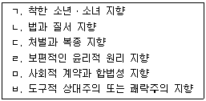
- ㄱ - ㄷ - ㅂ - ㄴ - ㄹ - ㅁ
- ㄱ - ㄷ - ㅂ - ㄴ - ㅁ - ㄹ
- ㄷ - ㅂ - ㄱ - ㄴ - ㅁ - ㄹ
- ㄷ - ㅂ - ㄴ - ㄱ - ㅁ - ㄹ
- ㅂ - ㄷ - ㄱ - ㄴ - ㄹ - ㅁ
(정답률: 67%)
36. 마르샤(J. Marcia)의 자아정체감에 관한 설명으로 옳은 것을 모두 고른 것은?
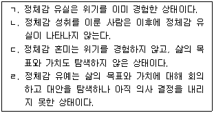
- ㄱ, ㄷ
- ㄴ, ㄹ
- ㄷ, ㄹ
- ㄱ, ㄷ, ㄹ
- ㄱ, ㄴ, ㄷ, ㄹ
(정답률: 55%)
37. 인지발달에 있어 비계(scaffolding)와 사회문화적 요인의 중요성을 강조한 학자는?
- 피아제(J. Piaget)
- 비고츠키(L. Vygotsky)
- 길리건(C. Gilligan)
- 로저스(C. Rogers)
- 매슬로우(A. Maslow)
(정답률: 61%)
38. 홀랜드(J. Holland)의 직업성격 유형이 아닌 것은?
- 탐구적 유형
- 예술적 유형
- 사회적 유형
- 잠재적 유형
- 기업적 유형
(정답률: 71%)
39. 학교폭력예방 및 대책에 관한 법률상 옳지 않은 것을 모두 고른 것은?
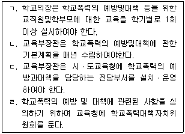
- ㄱ, ㄴ
- ㄱ, ㄹ
- ㄴ, ㄷ
- ㄱ, ㄴ, ㄹ
- ㄴ, ㄷ, ㄹ
(정답률: 30%)
40. 약물남용에 관한 설명으로 옳은 것은?
- 약물의존과 금단증상은 관계가 없다.
- 약물남용을 하더라도 약물중독에는 이르지 않는다.
- 약물남용은 일시적 현상으로 만성화될 가능성이 낮다.
- 담배나 술은 환각을 목적으로 지속하여 사용을 하더라도 약물남용이 아니다.
- 내성이란 동일한 효과를 얻기 위해 약물의 양과 횟수가 늘어나는 것을 말한다.
(정답률: 63%)
41. ( )에 들어갈 기관은?
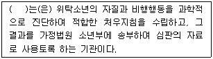
- 소년분류심사원
- 소년교도소
- 보호관찰소
- 청소년쉼터
- 청소년상담복지센터
(정답률: 63%)
42. 중추신경 억제제로 옳은 것은?
- 술(알코올)
- 담배(니코틴)
- 카페인
- 코카인
- 필로폰
(정답률: 45%)
43. 청소년기 대중스타 수용현상에 관한 설명으로 옳지 않은 것은?
- 대중스타는 청소년 수용자의 정체감 형성에 영향을 미친다.
- 대중스타 수용을 통해 사회참여의 기회를 갖기도 한다.
- 대중스타에 대한 집단적 추구를 통해 또래집단과의 동질성을 확보하기도 한다.
- 일방적으로 대중문화와 대중스타를 수용하고 소비하는 청소년들을 생비자(prosumer)라고 한다.
- 청소년기의 긴장과 갈등, 현실세계의 억압된 불만을 해소시키는 기능이 있다.
(정답률: 66%)
44. 다음의 소비이론을 주장한 학자는?
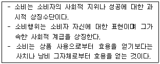
- 에써(H. Esser)
- 윌리스(P. Willis)
- 베블렌(T. Veblen)
- 부르디외(P. Bourdieu)
- 보드리야르(J. Baudrillard)
(정답률: 33%)
45. 문화특성에 관한 설명으로 옳은 것을 모두 고른 것은?
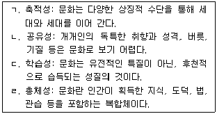
- ㄱ, ㄴ
- ㄷ, ㄹ
- ㄱ, ㄷ, ㄹ
- ㄴ, ㄷ, ㄹ
- ㄱ, ㄴ, ㄷ, ㄹ
(정답률: 23%)
46. 청소년복지 지원법상 청소년복지시설을 모두 고른 것은?
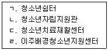
- ㄱ, ㄴ
- ㄷ, ㄹ
- ㄱ, ㄴ, ㄷ
- ㄴ, ㄷ, ㄹ
- ㄱ, ㄴ, ㄷ, ㄹ
(정답률: 25%)
47. 청소년쉼터에 관한 설명으로 옳은 것은?
- 일시쉼터는 24시간 이내 일시보호가 가능하며 최장 3일까지 연장이 가능하다.
- 단기쉼터는 일반청소년의 가출예방과 가출청소년의 조기발견 및 초기개입을 지향한다.
- 단기쉼터는 6개월 이내 단기보호가 가능하며 최장 12개월까지 연장이 가능하다.
- 중장기쉼터는 1년 이내 중장기보호가 가능하며 최장 2년까지 연장이 가능하다.
- 중장기쉼터는 주택가에 위치하며 청소년의 자립지원을 지향한다.
(정답률: 40%)
48. 다음은 청소년 기본법의 제정목적이다. ( )에 들어갈 용어가 아닌 것은?
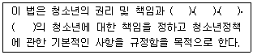
- 가정
- 학교
- 사회
- 국가
- 지방자치단체
(정답률: 27%)
49. 다음이 설명하는 개념은?
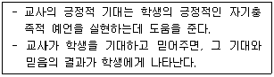
- 낙인이론
- 모델링 효과
- 프리맥 원리
- 피그말리온 효과
- 반응-촉진 효과
(정답률: 60%)
50. 유엔아동권리협약에 관한 설명으로 옳은 것은?
- 국제인권법의 하나로 20세 이하 아동의 인권을 다룬다.
- 우리나라에서는 헌법과 동등한 법적 지위를 가지며 국회에서 제정하는 국내법과 동일한 효력을 지닌다.
- 비준국인 우리나라는 협약 이행사항에 대한 국가보고서를 제출할 의무가 없다.
- 아동의 학습권, 보호받을 권리, 발달권, 참여권을 규정하고 있다.
- 발달권에는 초등교육의 무상 의무교육, 중등교육의 장려, 고등교육의 개방이 포함된다.
(정답률: 17%)
3과목: 청소년 수련 활동론
51. 청소년활동 진흥법상 다음에서 설명하는 청소년활동 유형은?
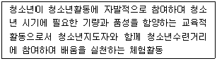
- 청소년문화활동
- 청소년수련활동
- 청소년자기계발활동
- 청소년직업체험활동
- 청소년교류활동
(정답률: 20%)
52. 경험학습이론에 관한 설명으로 옳지 않은 것은?
- 체험중심의 활동을 통해 청소년들의 참여를 강조한다.
- 청소년활동의 내용 및 방법은 일상생활과 관련성을 가진다.
- 청소년의 행동변화를 유발하기 위하여 반성적 사고 과정을 중시한다.
- 청소년지도자는 참가자들이 활동경험을 공유할 수 있는 분위기를 조성한다.
- 콜브(D. Kolb)에 의하면 구체적 경험, 추상적 개념화, 적극적 실험, 반성적 관찰의 순서로 진행된다.
(정답률: 24%)
53. 청소년활동의 목표 진술방법으로 옳지 않은 것은?
- 관찰 가능한 행동동사를 사용한다.
- 청소년의 입장에서 진술한다.
- 다른 목표와 조화를 유지한다.
- 청소년기관장이 지향하는 이념을 진술한다.
- 활동이 끝났을 때 기대되는 행동으로 진술한다.
(정답률: 21%)
54. 다음에서 설명하는 프로그램 내용 조직의 원리는?
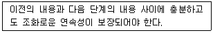
- 개별성
- 타당성
- 계속성
- 다양성
- 통합성
(정답률: 32%)
55. 프로그램 개발 과정에서 청소년들이 원하는 주제, 내용, 방법 등을 체계적으로 조사하고 분석하는 것은?
- 환경분석
- 요구분석
- 직무분석
- 판별분석
- 경로분석
(정답률: 25%)
56. 의사결정 평가모형에 관한 설명으로 옳은 것을 모두 고른 것은?
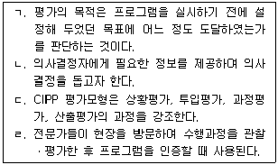
- ㄱ, ㄴ
- ㄴ, ㄷ
- ㄷ, ㄹ
- ㄱ, ㄴ, ㄹ
- ㄱ, ㄷ, ㄹ
(정답률: 8%)
57. 프로그램 도입단계에서 청소년지도자의 수행 과업으로 옳지 않은 것은?
- 참가자에게 프로그램의 목표를 제시한다.
- 다양한 자극을 사용하여 참가자들의 동기를 유발한다.
- 참가자의 긍정적인 참여결과에 대해 칭찬하고 상을 준다.
- 활동 주제와 관련된 참가자의 선행경험을 재생하도록 돕는다.
- 청소년지도자와 청소년 간, 참여 청소년들 간의 친밀감을 조성한다.
(정답률: 15%)
58. 청소년지도방법의 원리로 옳지 않은 것은?
- 청소년이 활동의 주체가 되어 참여하도록 지도한다.
- 청소년 간에 유기적인 협력이 이루어질 수 있도록 지도한다.
- 청소년의 실천적 행위와 체험이 될 수 있도록 지도한다.
- 청소년 간에 대립 구조를 조장하여 목표를 선점할 수 있도록 지도한다.
- 청소년이 처해 있는 삶의 상황과 관계를 총체적으로 고려하여 지도한다.
(정답률: 24%)
59. 청소년활동 진흥법상 다음이 설명하는 청소년수련시설은?
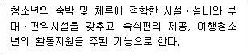
- 청소년수련관
- 청소년문화의 집
- 청소년야영장
- 청소년특화시설
- 유스호스텔
(정답률: 21%)
60. 청소년 기본법령상 청소년 방과 후 활동 종합지원사업이 아닌 것은?
- 청소년의 역량 개발 지원
- 청소년의 기본학습 및 보충학습 지원
- 청소년 유해약물 피해 예방 및 치료와 재활
- 청소년의 안전하고 건강한 방과 후 활동을 위한 학부모 교육
- 청소년의 안전하고 건강한 방과 후 활동을 위한 급식, 시설 지원 및 상담
(정답률: 10%)
61. 청소년활동 진흥법령상 청소년수련시설의 안전관련 기준에 관한 설명으로 옳은 것을 모두 고른 것은?
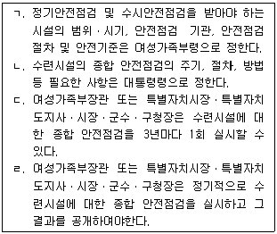
- ㄱ, ㄴ
- ㄱ, ㄹ
- ㄴ, ㄹ
- ㄱ, ㄴ, ㄷ
- ㄱ, ㄷ, ㄹ
(정답률: 10%)
62. 청소년 기본법령상 수용인원이 30명인 청소년수련시설의 청소년지도사 배치대상과 배치기준으로 옳은 것은?
- 청소년수련관-2급 1명, 3급 1명
- 청소년수련원-2급 1명, 3급 1명
- 청소년특화시설-3급 2명
- 청소년수련관-2급 2명, 3급 1명
- 청소년수련원-3급 2명
(정답률: 12%)
63. 청소년 기본법상 한국청소년단체협의회의 기능이 아닌 것은?
- 외국 청소년단체와의 교류ㆍ지원
- 청소년지도자의 연수와 권익증진
- 청소년활동에 관한 연구ㆍ조사ㆍ지원
- 청소년관련분야의 국제기구활동
- 청소년수련시설의 안전에 관한 홍보 및 실천운동
(정답률: 15%)
64. 국립청소년수련시설이 아닌 것은?
- 국립평창청소년수련원
- 국립중앙청소년디딤센터
- 국립고흥청소년우주체험센터
- 국립김제청소년농업생명체험센터
- 국립영덕청소년해양환경체험센터
(정답률: 21%)
65. 다음이 설명하는 것은?
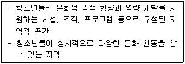
- 청소년 레드존
- 청소년 블루존
- 청소년 스쿨존
- 오리엔티어링
- 청소년어울림마당
(정답률: 21%)
66. 범정부적 차원의 청소년정책과제의 설정ㆍ추진 및 점검을 위하여 청소년 분야의 전문가와 청소년이 참여하는 기구는?
- 청소년특별회의
- 청소년보호위원회
- 청소년정책위원회
- 청소년정책실무위원회
- 학교밖청소년지원위원회
(정답률: 11%)
67. 청소년활동 진흥법상 청소년수련시설의 종합평가에 관한 내용이다. ( )에 들어갈 용어로 옳은 것은?
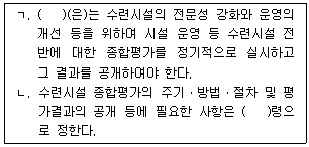
- 대통령, 보건복지부
- 국무총리, 여성가족부
- 여성가족부장관, 여성가족부
- 여성가족부장관, 대통령
- 국무총리, 보건복지부
(정답률: 16%)
68. 청소년활동 진흥법령상 청소년운영위원회에 관한 설명으로 옳은 것은?
- 10명 이상 20명 이하의 청소년으로 구성하여야 한다.
- 위원의 임기는 2년으로 한다.
- 위원장은 위원 중에서 연장자가 한다.
- 여성가족부장관은 청소년운영위원회의 의견을 수련시설 운영에 반영하여야 한다.
- 청소년운영위원회의 구성ㆍ운영 등에 필요한 사항은 조례로 정한다.
(정답률: 17%)
69. 청소년수련활동 인증제의 공통기준으로 옳은 것은?
- 숙박관리
- 이동관리
- 프로그램 지원운영
- 휴식관리
- 영양관리자 자격
(정답률: 28%)
70. 청소년활동 진흥법령상 인증수련활동의 기록 유지ㆍ관리 등에 관한 설명으로 옳지 않은 것은?
- 국가는 인증을 받은 청소년수련활동을 공개하여야 한다.
- 국가는 인증수련활동에 참여한 청소년의 활동기록을 유지ㆍ관리하여야 한다.
- 국가는 청소년이 요청하는 경우 청소년 본인의 동의하에 활동기록을 제공하여야 한다.
- 보건복지부령에서 정하는 인증기준에 따라 심사하고, 인증을 요청한 자에게 그 결과를 통지하여야 한다.
- 인증위원회의 구성ㆍ운영 등에 필요한 사항은 대통령령으로 정한다.
(정답률: 17%)
71. 국제청소년성취포상제에 관한 설명으로 옳은 것은?
- 참여할 수 있는 연령은 만 9세부터 24세까지이다.
- 은장은 만 12세 이상을 대상으로 한다.
- 금장 단계에 한하여 합숙활동을 해야 한다.
- 포상 활동영역은 자율활동, 동아리활동, 봉사활동, 진로활동이다.
- 포상 단계별 최소 활동 기간은 동장 3개월, 은장 6개월, 금장 9개월이다.
(정답률: 11%)
72. 청소년활동 진흥법령상 청소년수련활동 인증제의 취소 등에 관한 내용이다. ( )에 들어갈 숫자가 옳은 것은?
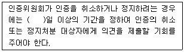
- 10
- 15
- 20
- 25
- 30
(정답률: 13%)
73. 2015 개정 교육과정상 창의적 체험활동의 영역으로 옳은 것을 모두 고른 것은?
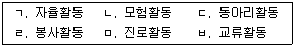
- ㄱ, ㄴ, ㄷ, ㄹ
- ㄱ, ㄷ, ㄹ, ㅁ
- ㄱ, ㄷ, ㅁ, ㅂ
- ㄴ, ㄹ, ㅁ, ㅂ
- ㄷ, ㄹ, ㅁ, ㅂ
(정답률: 25%)
74. 청소년활동 진흥법령상 인증을 받아야 하는 청소년수련활동으로 옳은 것을 모두 고른 것은?
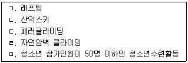
- ㄱ, ㄴ
- ㄱ, ㄷ, ㄹ
- ㄴ, ㄷ, ㅁ
- ㄱ, ㄴ, ㄷ, ㄹ
- ㄱ, ㄴ, ㄹ, ㅁ
(정답률: 32%)
75. ( )에 들어갈 용어로 옳은 것은?
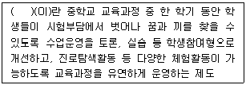
- 자유학기제
- 홈스쿨링
- 방과후돌봄서비스
- 자기도전성취포상제
- 청소년 멘토링
(정답률: 25%)